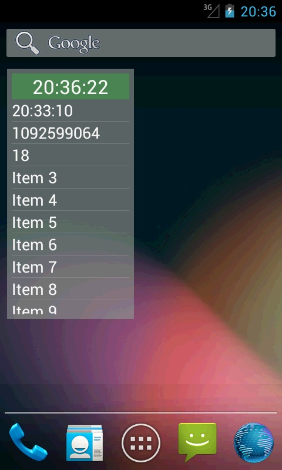
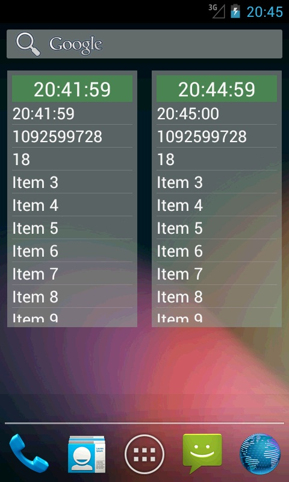
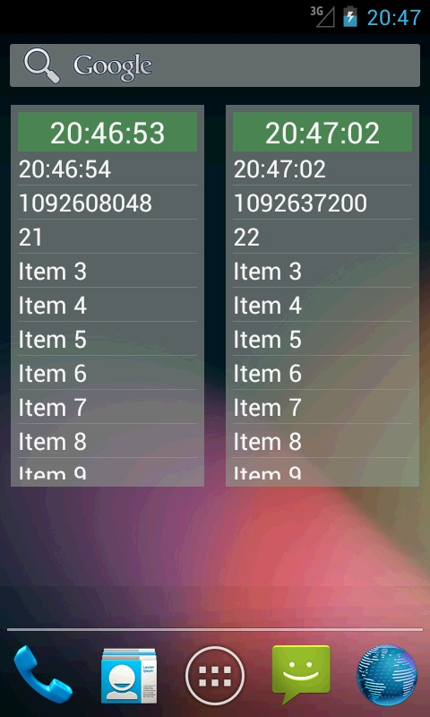
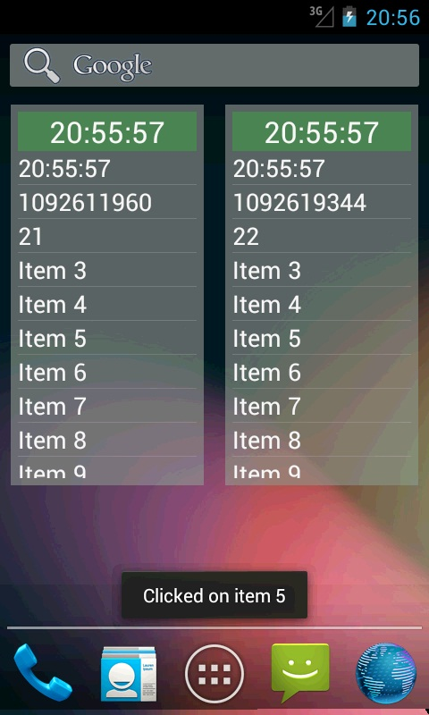

В этом уроке:
- создаем виджет со списком
В третьей версии Андроид у виджетов появилась возможность работать с наборами данных типа списка или грида. Рассмотрим эту технологию на примере списка. В качестве view-компонента используется обычный ListView. Для межпроцессной работы с ним используется, как обычно в виджетах, RemoteViews. Но для заполнения нам придется создать два класса в дополнение к стандартному классу провайдера.
Первый – этот класс будет наполнять наш список значениями. Класс является реализацией интерфейса RemoteViewsService.RemoteViewsFactory, и его методы очень схожи с методами стандартного адаптера. Его обычно везде называют factory. Я же в этом уроке буду называть его просто адаптером.
Второй – класс сервиса, наследующий RemoteViewsService. В нем мы реализуем только один метод, который будет создавать и возвращать экземпляр (первого) класса, который будет заполнять список.
При создании и работе со списком в виджете необходимо понимать, как реализованы два момента: заполнение данными и реакция на нажатия.
Опишу вкратце схему заполнения данными. При подготовке виджета в классе провайдера мы для списка присваиваем Intent, который содержит данные для вызова нашего второго класса-сервиса. Когда система хочет обновить данные в списке (в виджете) она достает этот интент, биндится к указанному сервису и берет у него адаптер. И этот адаптер уже используется для наполнения и формирования пунктов списка.
Теперь о реализации нажатий на пункты списка. В обычном виджете использовались PendingIntent. Здесь чуть по-другому. Для каждого пункта в списке НЕ создается свой отдельный PendingIntent. Вместо этого списку дается общий, шаблонный PendingIntent. А для каждого пункта списка мы указываем отдельный Intent с extra-данными. Далее, при создании, каждому пункту списка система присваивает обработчик нажатия, который при срабатывании берет этот общий PendingIntent, добавляет к нему данные из персонального Intent, и отправляет по назначению сформированный таким образом PendingIntent. Т.е. в итоге по клику все равно срабатывает PendingIntent.
Сделаем пример и рассмотрим на практике все эти теоретические выкладки.
Создадим проект без Activity:
Project name: P1211_ListWidget
Build Target: Android 4.1
Application name: ListWidget
Package name: ru.startandroid.develop.p1211listwidget
Создаем layout-виджета - widget.xml:
<?xml version="1.0" encoding="utf-8"?>
<RelativeLayout
xmlns:android="http://schemas.android.com/apk/res/android"
android:layout_width="match_parent"
android:layout_height="match_parent"
android:background="#9999"
android:padding="5dp">
<TextView
android:id="@+id/tvUpdate"
android:layout_width="match_parent"
android:layout_height="wrap_content"
android:layout_alignParentTop="true"
android:background="#3300ff00"
android:gravity="center"
android:textAppearance="?android:attr/textAppearanceLarge">
</TextView>
<ListView
android:id="@+id/lvList"
android:layout_width="match_parent"
android:layout_height="match_parent"
android:layout_below="@id/tvUpdate">
</ListView>
</RelativeLayout>Текст будет использован для отображения время обновления. Он же собственно и будет кнопкой обновления. В списке будем показывать данные.
Теперь layout строки списка – item.xml:
<?xml version="1.0" encoding="utf-8"?>
<RelativeLayout
xmlns:android="http://schemas.android.com/apk/res/android"
android:layout_width="match_parent"
android:layout_height="match_parent">
<TextView
android:id="@+id/tvItemText"
android:layout_width="match_parent"
android:layout_height="wrap_content"
android:textAppearance="?android:attr/textAppearanceMedium">
</TextView>
</RelativeLayout>В каждом пункте списка у нас будет только текст.
Создаем класс-адаптер - MyFactory.java:
package ru.startandroid.develop.p1211listwidget;
import java.sql.Date;
import java.text.SimpleDateFormat;
import java.util.ArrayList;
import android.appwidget.AppWidgetManager;
import android.content.Context;
import android.content.Intent;
import android.widget.RemoteViews;
import android.widget.RemoteViewsService.RemoteViewsFactory;
public class MyFactory implements RemoteViewsFactory {
ArrayList<String> data;
Context context;
SimpleDateFormat sdf;
int widgetID;
MyFactory(Context ctx, Intent intent) {
context = ctx;
sdf = new SimpleDateFormat("HH:mm:ss");
widgetID = intent.getIntExtra(AppWidgetManager.EXTRA_APPWIDGET_ID,
AppWidgetManager.INVALID_APPWIDGET_ID);
}
@Override
public void onCreate() {
data = new ArrayList<String>();
}
@Override
public int getCount() {
return data.size();
}
@Override
public long getItemId(int position) {
return position;
}
@Override
public RemoteViews getLoadingView() {
return null;
}
@Override
public RemoteViews getViewAt(int position) {
RemoteViews rView = new RemoteViews(context.getPackageName(),
R.layout.item);
rView.setTextViewText(R.id.tvItemText, data.get(position));
return rView;
}
@Override
public int getViewTypeCount() {
return 1;
}
@Override
public boolean hasStableIds() {
return true;
}
@Override
public void onDataSetChanged() {
data.clear();
data.add(sdf.format(new Date(System.currentTimeMillis())));
data.add(String.valueOf(hashCode()));
data.add(String.valueOf(widgetID));
for (int i = 3; i < 15; i++) {
data.add("Item " + i);
}
}
@Override
public void onDestroy() {
}
}Методы очень похожи на методы обычного адаптера. Обсудим некоторые.
MyFactory – конструктор. Здесь никаких требований. Я, например, использую конструктор с двумя параметрами – Context и Intent. Этот Intent будет передавать нам сервис при создании адаптера. В нем я передаю адаптеру ID виджета.
onCreate – создание адаптера.
getLoadingView – здесь вам предлагается возвращать View, которое система будет показывать вместо пунктов списка, пока они создаются. Если ничего здесь не создавать, то система использует некое дефолтное View.
getViewAt – создание пунктов списка. Здесь идет стандартное использование RemoteViews
onDataSetChanged – вызывается, когда поступил запрос на обновление данных в списке. Т.е. в этом методе мы подготавливаем данные для списка. Метод заточен под выполнение тяжелого долгого кода. В трех первых пунктах списка мы выводим текущее время, хэш-код адаптера и ID-виджета. Позже станет понятно, зачем.
onDestroy – вызывается при удалении последнего списка, который использовал адаптер (один адаптер может использоваться несколькими списками).
Создаем сервис – MyService.java:
package ru.startandroid.develop.p1211listwidget;
import android.content.Intent;
import android.widget.RemoteViewsService;
public class MyService extends RemoteViewsService {
@Override
public RemoteViewsFactory onGetViewFactory(Intent intent) {
return new MyFactory(getApplicationContext(), intent);
}
}В нем мы просто реализуем метод onGetViewFactory, который создает адаптер, передает ему Context и Intent, и возвращает этот созданный адаптер системе.
Класс провайдер – MyProvider.java:
package ru.startandroid.develop.p1211listwidget;
import java.sql.Date;
import java.text.SimpleDateFormat;
import android.app.PendingIntent;
import android.appwidget.AppWidgetManager;
import android.appwidget.AppWidgetProvider;
import android.content.Context;
import android.content.Intent;
import android.widget.RemoteViews;
public class MyProvider extends AppWidgetProvider {
SimpleDateFormat sdf = new SimpleDateFormat("HH:mm:ss");
@Override
public void onUpdate(Context context, AppWidgetManager appWidgetManager,
int[] appWidgetIds) {
super.onUpdate(context, appWidgetManager, appWidgetIds);
for (int i : appWidgetIds) {
updateWidget(context, appWidgetManager, i);
}
}
void updateWidget(Context context, AppWidgetManager appWidgetManager,
int appWidgetId) {
RemoteViews rv = new RemoteViews(context.getPackageName(),
R.layout.widget);
setUpdateTV(rv, context, appWidgetId);
setList(rv, context, appWidgetId);
setListClick(rv, context, appWidgetId);
appWidgetManager.updateAppWidget(appWidgetId, rv);
}
void setUpdateTV(RemoteViews rv, Context context, int appWidgetId) {
rv.setTextViewText(R.id.tvUpdate,
sdf.format(new Date(System.currentTimeMillis())));
Intent updIntent = new Intent(context, MyProvider.class);
updIntent.setAction(AppWidgetManager.ACTION_APPWIDGET_UPDATE);
updIntent.putExtra(AppWidgetManager.EXTRA_APPWIDGET_IDS,
new int[] { appWidgetId });
PendingIntent updPIntent = PendingIntent.getBroadcast(context,
appWidgetId, updIntent, 0);
rv.setOnClickPendingIntent(R.id.tvUpdate, updPIntent);
}
void setList(RemoteViews rv, Context context, int appWidgetId) {
Intent adapter = new Intent(context, MyService.class);
adapter.putExtra(AppWidgetManager.EXTRA_APPWIDGET_ID, appWidgetId);
rv.setRemoteAdapter(R.id.lvList, adapter);
}
void setListClick(RemoteViews rv, Context context, int appWidgetId) {
}
}onUpdate вызывается, когда поступает запрос на обновление виджетов. В нем мы перебираем ID, и для каждого вызываем метод updateWidget.
updateWidget – здесь вызываем три метода для формирования виджета и затем метод updateAppWidget, чтобы применить все изменения к виджету.
setUpdateTV – в этом методе работаем с TextView (который над списком). Ставим ему время в качестве текста и вешаем обновление виджета по нажатию.
setList – с помощью метода setRemoteAdapter указываем списку, что для получения адаптера ему надо будет обратиться к нашему сервису MyService.
Также обратите внимание, что в Intent мы помещаем ID виджета. Зачем? Этот Intent будет передан в метод сервиса onGetViewFactory. Этот метод мы реализовывали, в нем мы создаем адаптер и передаем ему тот же Intent. А уже в адаптере достаем этот ID и используем (третья строка в списке). Т.е. этот Intent пройдет через сервис и попадет в адаптер, поэтому если хотите что-то передать адаптеру, используйте этот Intent.
Но, повторюсь, это вовсе необязательно. Вы можете создать конструктор адаптера и без Intent-а на вход. Просто мне надо было как-то передать адаптеру ID виджета, поэтому я использую Intent.
setListClick – пока пустой. Чуть позже будем писать в нем обработку нажатий на пункты списка.
Файл метаданных виджета - res/xml/widget_metadata.xml:
<?xml version="1.0" encoding="utf-8"?>
<appwidget-provider
xmlns:android="http://schemas.android.com/apk/res/android"
android:initialLayout="@layout/widget"
android:minHeight="180dp"
android:minWidth="110dp"
android:updatePeriodMillis="1800000">
</appwidget-provider>Фрагмент манифеста, описывающий сервис и бродкаст:
<service
android:name="MyService"
android:permission="android.permission.BIND_REMOTEVIEWS">
</service>
<receiver
android:name="MyProvider">
<intent-filter>
<action
android:name="android.appwidget.action.APPWIDGET_UPDATE">
</action>
</intent-filter>
<meta-data
android:name="android.appwidget.provider"
android:resource="@xml/widget_metadata">
</meta-data>
</receiver>Для сервиса, необходимо установить разрешение BIND_REMOTEVIEWS. Это мы не наделяем сервис полномочиями, а наоборот, указываем, что этими полномочиями должен быть наделен тот, кто будет этот сервис вызывать. Система имеет такие полномочия, поэтому сможет использовать сервис для заполнения списка в адаптере.
Непростая это штука – виджеты, правда? Столько телодвижений из-за простого списка :)
Все сохраняем, инсталлим виджет. Добавим на экран. В списке он будет называться ListWidget.
Видим время обновления виджета, время формирования данных в списке, хэш-код адаптера, ID виджета.
Жмем зеленую зону для обновления.
Время обновления виджета поменялось, а вот список не обновился, время формирования данных осталось прежним.

Чтобы обновить данные в списке виджета, необходимо явно вызвать метод notifyAppWidgetViewDataChanged и передать ему ID виджета и ID списка.
Давайте сделаем это. Перепишем updateWidget в MyProvider.java:
void updateWidget(Context context, AppWidgetManager appWidgetManager,
int appWidgetId) {
RemoteViews rv = new RemoteViews(context.getPackageName(),
R.layout.widget);
setUpdateTV(rv, context, appWidgetId);
setList(rv, context, appWidgetId);
setListClick(rv, context, appWidgetId);
appWidgetManager.updateAppWidget(appWidgetId, rv);
appWidgetManager.notifyAppWidgetViewDataChanged(appWidgetId,
R.id.lvList);
}Добавили вызов обновления данных списка.
Сохраняем, инсталлим. Теперь нажатие на зеленую зону будет обновлять и список.
Теперь давайте добавим второй виджет. У них внезапно совпадают ID виджета и хэш-коды адаптеров.

Вывод: они используют один адаптер. Почему так?
Когда система создает список в виджете, она использует Intent, который мы передавали в метод setRemoteAdapter. В этом Intent мы указали, что надо использовать сервис MyService. Система биндится к MyService и передает ему этот Intent. Сервис проверяет, не был ли уже создан адаптер для такого Intent. Если был – то он и возвращается системе. Если по такому Intent еще не создавался адаптер, то он создается (используется метод onGetViewFactory, который мы реализовали) и возвращается системе. Т.е. некая система кэширования адаптеров по Intent.
Теперь наложим эту логику на нашу ситуацию. Мы создали первый виджет. В метод setRemoteAdapter передавали Intent с указанием класса нашего сервиса и с ID виджета в extra-данных. Сервис создал адаптер, отдал его списку первого виджета и связал эту пару – Intent и адаптер. Далее мы создаем второй виджет. Для его списка, мы использовали такой же Intent. Отличие только в extra-данных – ID виджета. Но сервис сверяет Intent-ы только по основным данным, без extra. Поэтому для него два этих Intent от разных виджетов получились одинаковы. И когда список второго виджета дал Intent и попросил выделить ему адаптер, сервис взял Intent, увидел, что по подобному Intent уже был выдан адаптер и его и использовал вместо того, чтобы новый городить. Т.е. список второго виджета получил тот же адаптер, что и список первого виджета.
Поэтому список второго виджета и показывает те же данные адаптера (ID виджета и хэш-код), что и список первого. Как это пофиксить? Сделать Intent-ы разными. Для этого будем добавлять к ним data, в который поместим все данные Intent. В этом случае у нас в data попадут extra-данные и Intent-ы будут разными.
Перепишем метод setList в MyProvider.java:
void setList(RemoteViews rv, Context context, int appWidgetId) {
Intent adapter = new Intent(context, MyService.class);
adapter.putExtra(AppWidgetManager.EXTRA_APPWIDGET_ID, appWidgetId);
Uri data = Uri.parse(adapter.toUri(Intent.URI_INTENT_SCHEME));
adapter.setData(data);
rv.setRemoteAdapter(R.id.lvList, adapter);
}Теперь все ок. Для разных виджетов получатся разные Intent и списки получат разные адаптеры.
Для чистоты эксперимента удалите пару ранее созданных виджетов с экрана.
Все сохраняем, инсталлим. Размещаем пару виджетов

Все ок, видим, что теперь списки используют разные адаптеры.
Осталось разобраться с реагированием на нажатия пунктов списка.
Добавим пару констант в класс MyProvider.java:
final String ACTION_ON_CLICK = "ru.startandroid.develop.p1211listwidget.itemonclick";
final static String ITEM_POSITION = "item_position"; Заполним метод setListClick в MyProvider.java:
void setListClick(RemoteViews rv, Context context, int appWidgetId) {
Intent listClickIntent = new Intent(context, MyProvider.class);
listClickIntent.setAction(ACTION_ON_CLICK);
PendingIntent listClickPIntent = PendingIntent.getBroadcast(context, 0,
listClickIntent, 0);
rv.setPendingIntentTemplate(R.id.lvList, listClickPIntent);
}Здесь используется обычный алгоритм послания бродкаста. Мы с помощью метода setPendingIntentTemplate устанавливаем шаблонный PendingIntent, который затем будет использоваться всеми пунктами списка. В нем мы указываем, что необходимо будет вызвать наш класс провайдера (он же BroadcastReceiver) с action = ACTION_ON_CLICK.
Теперь нам надо сделать обработку этого action. Добавим метод onReceive в MyProvider.java:
@Override
public void onReceive(Context context, Intent intent) {
super.onReceive(context, intent);
if (intent.getAction().equalsIgnoreCase(ACTION_ON_CLICK)) {
int itemPos = intent.getIntExtra(ITEM_POSITION, -1);
if (itemPos != -1) {
Toast.makeText(context, "Clicked on item " + itemPos,
Toast.LENGTH_SHORT).show();
}
}
}Вызываем метод родителя, чтобы не нарушать работу провайдера. Далее проверяем, что action тот, что нам нужен - ACTION_ON_CLICK, вытаскиваем позицию нажатого пункта в списке и выводим сообщение на экран.
Осталось допилить адаптер. Перепишем getViewAt в MyFactory.java:
@Override
public RemoteViews getViewAt(int position) {
RemoteViews rView = new RemoteViews(context.getPackageName(),
R.layout.item);
rView.setTextViewText(R.id.tvItemText, data.get(position));
Intent clickIntent = new Intent();
clickIntent.putExtra(MyProvider.ITEM_POSITION, position);
rView.setOnClickFillInIntent(R.id.tvItemText, clickIntent);
return rView;
}Для каждого пункта списка мы создаем Intent, помещаем в него позицию пункта и вызываем setOnClickFillInIntent. Этот метод получает на вход ID View и Intent. Что он с ними делает?
Для View с полученным на вход ID он создает обработчик нажатия, который будет дергать PendingIntent, который получается следующим образом. Берется шаблонный PendingIntent, который был привязан к списку методом setPendingIntentTemplate (в классе провайдера) и к нему добавляется данные полученного на вход Intent-а. Т.е. получится PendingIntent, Intent которого будет содержать action = ACTION_ON_CLICK (это мы сделали еще в провайдере) и данные по позиции пункта списка. При нажатии на пункт списка, этот Intent попадет в onReceive нашего MyProvider и будет обработан, как я уже чуть ранее описывал.
Все сохраняем, инсталлим. Проверяем – нажимаем на какой либо пункт:

Сообщение отображается.
Подытожим про LifeCycle-методы. Метод onCreate для адаптера вызывается, когда он создается для первого своего списка. А метод onDestory вызывается, когда удаляется последний список, использующий этот адаптер.
Мы использовали метод setRemoteAdapter. который на вход берет ID View и Intent, этот метод появился только в API 14. А изначально в API 11 была такая реализация - setRemoteAdapter (int appWidgetId, int viewId, Intent intent). Он на вход требовал еще ID виджета. Используйте этот вариант метода, если ваш виджет должен будет работать в Android 3.
У обычного ListView есть возможность установить View, которое будет отображаться если данных в списке нет - метод setEmptyView. RemoteViews также предоставляет вам такую возможность - setEmptyView. На вход передаете ID списка и ID пустого View.